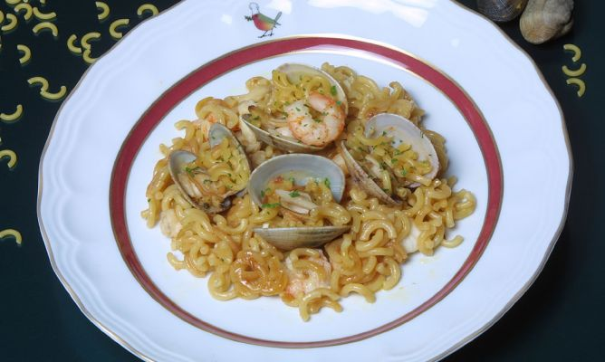

Fideuà Marinera
Ingredients:
- Fideus gruixuts, 250g
- Cua de rap, 1 o 2 segons grandària
- Gambes, 250g
- Cloïses, 400g
- Ceba, 1
- All, 1
- Verdures per fer caldo
- Julivert picadet
- Aigua
- Oli d'oliva
- Sal
Preparació:
- Netejar bé el rap i les gambes, reservant els caps i les arestes per preparar el caldo.
- Fiquem els caps, les arestes i les verdures en una olla amb aigua. Ho deixarem bullir i ja tindrem el caldo preparat. Escorre-ho i reservar-ho.
- Picarem la ceba i l'all i els posarem a la cassola amb una mica d'oli. Quan estiguin cuits hi afegirem els fideus i ho barrejarem. Després afegirem el rap i ho courem una mica.
- Hi abocarem el caldo (doble quantitat de caldo per cada quantitat de fideu), afegirem les gambes i les cloïses.
- Ho rectificarem de sal, ho deixarem coure uns 5 minuts fins que s'evapori el caldo i els fideus estiguin cuits.
- Es pot acompanyar amb un allioli o amb una maionesa.
- Bon profit!
